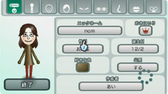
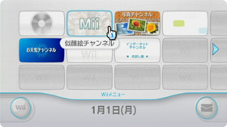
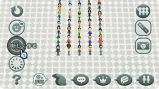
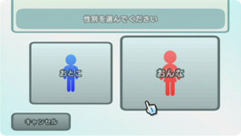
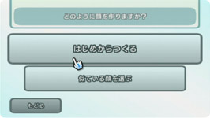
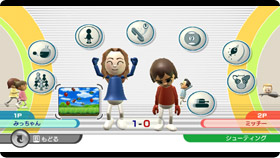
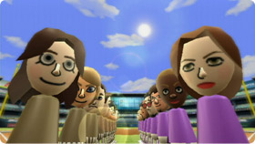

| Ｗｉｉ本体に搭載されている似顔絵チャンネル。ここではＭｉｉと呼ばれるキャラクターを作ることができます。じつはこのＭｉｉ達がＷｉｉのゲームをもっともっと楽しくしてくれるんです。 |
| ＭｉｉはＷｉｉの中に登場するあなたの分身です。目や鼻、髪型などのパーツをはじめ、体形や好きな色などを組み合わせて自由にデザインできるので、まさに世界中に１つしかないＭｉｉを作ることができます。 |  |
| ＭｉｉはＷｉｉの本体に搭載された『似顔絵チャンネル』で作れます。電源を入れた直後ならタテヨコに並んだチャンネル群の上段左から2番目にある、たくさんの顔が描かれたチャンネルがそれにあたります。（チャンネルの場所は変えられます。） |  |
テレビ画面にＷｉｉリモコンを向けると左右からメニューアイコンが登場します。左に並んだアイコンのなかから、「新しく作る」を選びます。 ※Ｍｉｉが１人もいない場合は自動的に「新しく作る」がスタートします。 |
 | |||
男性のＭｉｉを作るのか、女性のＭｉｉを作るのかを選択できます。 ここで決めたすべての設定は後からでも変更することができます。 |
 | |||
続いて「はじめからつくる」か「似ている顔を選ぶ」のどちらかを選びます。 |
 |
|||
|
||||||||||||||||||||
Ｍｉｉが完成！ できあがったＭｉｉは似顔絵広場に現れます。完成したＭｉｉは何度も手直しできるので、イメージと少し違うかなと思ったら微調整することができます。 |
||||
| Ｍｉｉに対応したソフトなら自分が作ったＭｉｉを読み込んでプレイヤーキャラとして遊ぶこともできます。ソフトによっては、セーブデータもＭｉｉごとに保存されたりすることも。自分にソックリのＭｉｉを選べばプレイの臨場感もアップしますよ。また、プレイヤーキャラだけではなく観衆などにＭｉｉが登場することもあるんです。Ｍｉｉを数多く登録しておくと対応ソフトのいろんなところでＭｉｉを発見できるかも。 |
|  |
| 前のページへ 次のページへ |
N.O.M１月号のトップページへ |